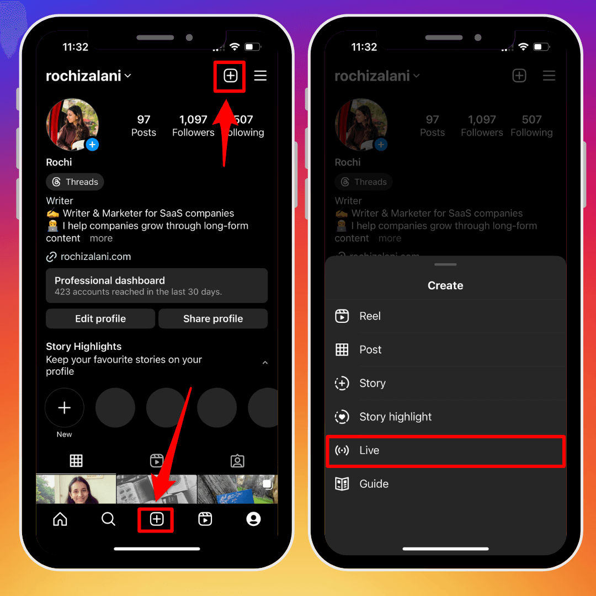
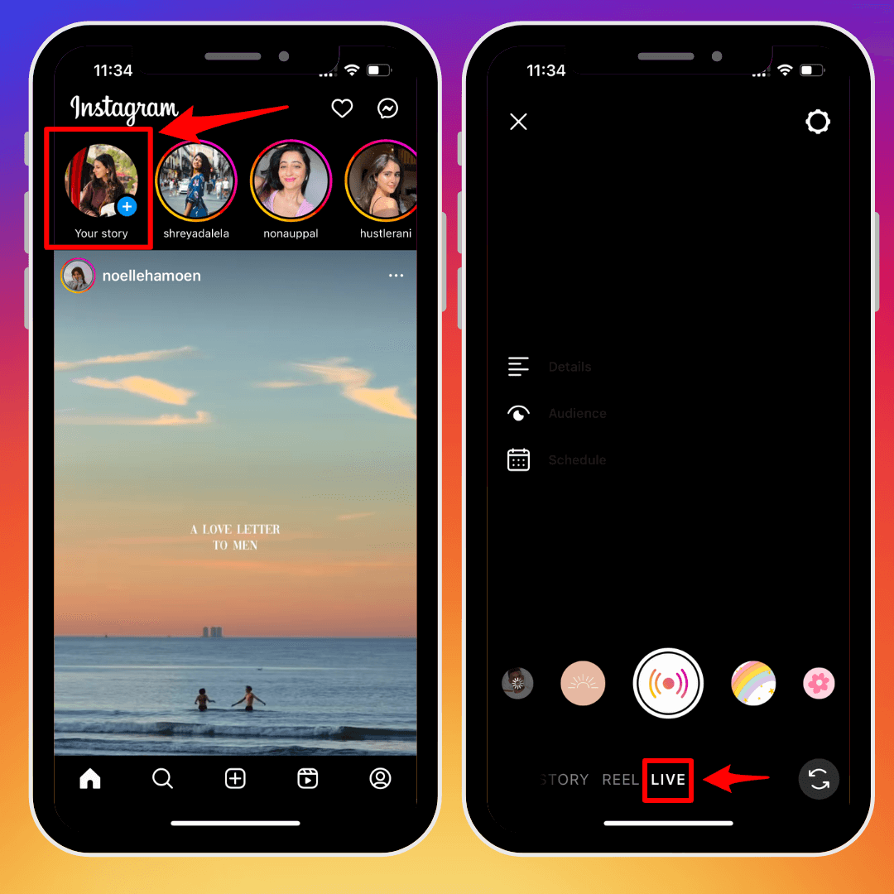

Going live on Instagram is the easiest bit. Here's how you start your live broadcast on Instagram:
|
In your profile, once you click the “+” icon, you'll see the option to go live. |
 |
|  |
If you want to go live using your Instagram Stories, click “Your Story” at the top left corner of your screen and select “Live.” |